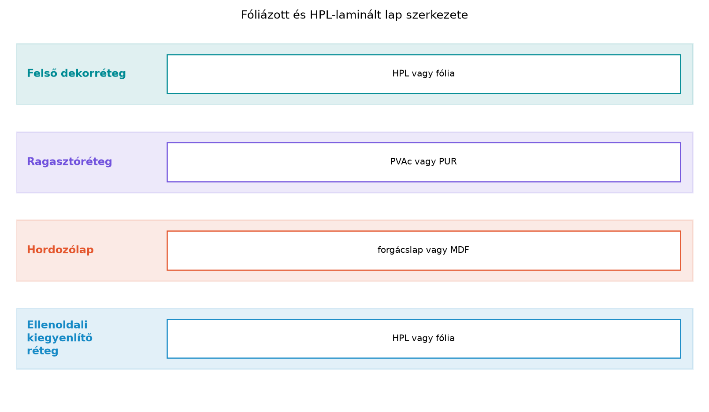

Egy konyhabútornál a vevő matt fehér, ujjlenyomat-tűrő frontot szeretne, a munkalapnak pedig bírnia kell a vizet, a forró edényt és a napi tisztítást. Az asztalos két ajtót mutat: az egyik melaminbevonatú forgácslap, a másik membránpréses fóliázott MDF. A felületek hasonlóan néznek ki, mégis más a felépítésük, az áruk és a hibalehetőségük. Ebben az alfejezetben a fóliázást és a laminálást tanulod meg: miből készülnek, milyen géppel dolgozunk, mire használjuk, és mi okozza a leggyakoribb hibákat.
A bevont lap úgy viselkedik, mint egy szendvics: felül a dekoratív, erős réteg, alatta a ragasztó, középen a hordozó lap, hátul pedig ellenoldali kiegyenlítő réteg. Az alábbi diagram a fóliázott vagy HPL-laminált lap elvi felépítését mutatja.

A rajz lényege: ha csak az egyik oldalra kerül erős bevonat, a lap elhúzódhat, tehát a hátsó oldalra is ragasztunk hasonló réteget.
Definíció. A felületbevonás olyan gyártási művelet, amelyben a faalapú lapra vagy tömör fára gyárilag készített, önálló réteget viszünk fel ragasztással vagy hővel. A bevonat lehet papíralapú, műanyag fólia vagy nagynyomású laminátum.
A leggyakoribb bevonóanyagok:
A laminálás szót itt a HPL ráragasztására használjuk; a fóliázás a vékonyabb, hajlékony fóliák felvitelét jelenti. A kettőt a műhelyben sokan keverik, de a technológia eltér.
A síkfóliázásnál a fóliát hengerek vagy síkprés viszi fel a lap felületére. Először a hordozót csiszolják és portalanítják, majd a ragasztót hengerrel vagy szórással hordják fel. A fóliát fűtött hengersor nyomja a lapra, a ragasztó hő hatására megköt. Az eljárás gyors, de csak sík, nem marott felületeket boríthat.
A profilburkolás során díszléc, élprofil vagy keskeny alkatrész köré fóliát tekercselnek. A gépet profilburkoló gépnek nevezik. A ragasztóval bevont fóliát fűtött levegővel lágyítják, majd gumihengerek nyomják a profilra. Ez a művelet egyszerűbb a membránpréses fóliázásnál, de csak állandó keresztmetszetű, hosszú profilokra alkalmas, sík felületű frontra nem.
A membránpréses fóliázás a legrugalmasabb: a fólia a marott, profilozott frontot is pontosan követi. A hőre lágyuló fólia felmelegszik, majd vákuummal rásimul a munkadarabra.
Eljárás – Membránpréses fóliázás lépései. 1. Az MDF frontot lemarjuk, élét lekerekítjük, csiszoljuk, majd sűrített levegővel portalanítjuk. – ellenőrzés: nincs por, zsír, ujjlenyomat. 2. A ragasztót (többnyire diszperziós ragasztó, esetenként PUR) a munkadarab felületére egyenletesen felhordjuk. – ellenőrzés: a ragasztómennyiség a gyártói adatlap szerinti. 3. A munkadarabot a présasztalra helyezzük, a profilon megfelelő betéteket, szellőző réteget használunk, hogy a levegő távozhasson. – ellenőrzés: nincs elmozdulás. 4. A fóliát kifeszítjük, felfűtjük a membránt és a fóliát, majd vákuumot kapcsolunk. – ellenőrzés: a vákuum értéke eléri a gépkönyvben megadott tartományt. 5. A préselési idő letelte után a munkadarabot hagyjuk hűlni, majd kivesszük. – ellenőrzés: a fólia nem válik el, a szín egyenletes. 6. A túlnyúló fóliát élmaróval vagy késsel eltávolítjuk, az éleket letisztítjuk. – ellenőrzés: nincs éles sorja, az élzárás folytonos.
Gépbiztonság. A membránprés, a fűtött hengerek és az élmaró betanított, felügyelt tanuló kezelésére való; védőberendezés nélkül, egyedül, fáradtan ne dolgozz. A prés forró felülete miatt védőkesztyű csak ott használható, ahol mozgó szerszám nem érhet bele; a ragasztógőzök miatt elszívás és légzésvédelem ajánlott. A gépet csak a gépkönyv szerint szabad üzemeltetni.
A HPL kész, önálló lemezként érkezik (nagynyomású présben gyártják), ezért ragasztással visszük a hordozóra. A műhelyben két út van:
Ellenoldali kiegyenlítés. Ha a lap egyik oldalára HPL-t ragasztunk, a másik oldalra is ragasztani kell egy hasonló réteget, különben a lap elhúzódik, vetemedik. Ezt a réteget ellenoldali kiegyenlítő rétegnek hívjuk. Általában ugyanolyan vastagságú HPL-t vagy olcsóbb kiegyenlítő laminátot teszünk hátulra.
Eljárás – HPL laminálás lépései. 1. A hordozólapot és a HPL-t méretre vágjuk, a HPL-t kb. 5–10 mm-rel nagyobbra hagyjuk, mint a kész méret. – ellenőrzés: a szélek párhuzamosak. 2. A ragasztandó felületeket portalanítjuk, zsírtalanítjuk. – ellenőrzés: nincs por. 3. A ragasztót a gyártó előírása szerint felhordjuk a hordozóra és a laminátumra is. – ellenőrzés: egyenletes, csepegésmentes réteg. 4. A rétegeket összefektetjük, a présbe helyezzük, és a megadott nyomáson, időn keresztül préseljük. – ellenőrzés: nyomás, hőmérséklet, idő. 5. A túllógó HPL-t élmaróval lemunkáljuk, az éleket csiszoljuk. – ellenőrzés: a munkadarab derékszögű, élek simák.
A fólia- és laminátumszükséglet egyszerű felületszámítás. Példa. Konyhafront kész mérete . A membránpréses fólia ráhagyása oldalanként , mert a fólia a profilt le kell, hogy fedje. A fólia szükséges elvi mérete:
Tehát egy frontra kb. fólia kell. A hulladékot a tekercs szabása dönti el; 10 %-os gyakorlati ráhagyással a beszerzendő mennyiség.
Második példa – ragasztófelhordás. HPL laminálásnál a ragasztó fajlagos felhordása (tájékoztató, a ragasztó adatlapja szerint ellenőrizendő). Egy front felülete . A front mindkét oldalára (dekor HPL és ellenoldali réteg) ragasztunk, ezért két ragasztási fuga van, és a ragasztott felület (a értéke fugánként értendő). A szükséges ragasztó tömeg:
Ha a gyártó mindkét felületre külön felhordást ír elő, a értékét a két felület összegeként kell értelmezni (ellenőrizendő: ragasztó adatlapja). 10–15 % veszteséggel kb. ragasztót készítsünk elő.
Minőségellenőrzés. A fóliázott és laminált felületeket szemrevételezéssel, kézzel és egyszerű mérőeszközökkel ellenőrizzük:
Ha eltérést találunk, először a ragasztó, a por vagy a prés beállítását vizsgáljuk.
Hiba – leválás. A fólia vagy HPL a szélén, később középen elválik a laptól. Ok: poros, zsíros felület; kevés ragasztó; túl hideg prés; túl rövid préselési idő; nedves hordozó. Megelőzés: portalanítás, frissen csiszolt felület, ragasztómennyiség és présidő betartása.
Hiba – buborék. A bevonat alatt levegő- vagy gőzzárvány látszik. Ok: a ragasztóból távozó oldószer; levegő beszorulása; egyenetlen ragasztófelvitel; túl gyors felfűtés. Megelőzés: szellőző csatorna a présben, fokozatos vákuum, a ragasztó nyitott idejének betartása.
Hiba – ragasztóátütés. A vékony fólián a ragasztó sárgás foltot, áttetsző csíkot okoz. Ok: túl sok ragasztó; túl magas hőmérséklet; a fólia túl vékony. Megelőzés: a gyártó által megadott felhordási mennyiség; alacsonyabb prés hőmérséklet; megfelelő fóliavastagság.
Tünet. Egy -es konyhai munkalap közepén, a HPL alatt átmérőjű daganat látszik. A széleken a tapadás jó.
Lehetséges okok: por a hordozón; ragasztóhiány; a hordozó nedvességtartalma túl magas; a présnyomás egyenetlen; a ragasztó nem volt bekeverve.
Vizsgálat. Megkopogtatjuk a felületet: a hiba tompa hangot ad, a jó terület éleset. A munkalap vastagságát tolómérővel mérjük: a buborék környékén vastagabb. A gyártási lap szerint a ragasztó bekeverése után 40 perccel készült a prés, ami meghaladta a fazékidőt (ellenőrizendő: a ragasztó adatlapja).
Valódi ok. A ragasztó fazékideje lejárt, ezért a középső részen nem kötött meg rendesen, és a préselés után gőz szorult a rétegek közé.
Javítás. A munkalap nem javítható esztétikusan; a hibás lapot ki kell cserélni vagy újra laminálni. Kisebb hibánál PUR ragasztó injektálható a buborék alá, de a szín és a síkosság nem garantált.
Megelőzés. A ragasztót mindig a fazékidőn belül használjuk fel, a préselést ütemezzük, és a ragasztó keverését, időpontját dokumentáljuk.
Továbbvitt eredmény. A fóliázott és laminált felületek fogalmait, rétegfelépítését és hibáit használjuk a felületkezelési hibák és a felületkezelési számítások, valamint a Szórófülkék, szárítóberendezések, fóliázó és lamináló gépek alfejezetben.
Kérdések. 1. Igaz-e, hogy a HPL ugyanaz, mint a melaminbevonatú forgácslap felülete? 2. Igaz-e, hogy a membránpréses fóliázás csak sík felületen használható? 3. Miért kell ellenoldali kiegyenlítő réteg a HPL-laminált munkalap hátoldalára? 4. Egy -es front fóliázásakor mennyi a fólia elvi mérete, ha oldalanként ráhagyással számolunk? 5. Milyen hiba látszik, ha a ragasztó átüt a vékony fólián? 6. Hogyan ellenőrzöd a laminált élének tapadását?
Megoldások – Önellenőrzés. 1. Hamis: a HPL külön gyártott, nagynyomású réteg, amelyet utólag ragasztanak a lapra. 2. Hamis: a membránpréses fóliázás 3D-s, marott profilt is borít. 3. Hogy a lap ne húzódjon el a nedvességváltozás hatására. 4. , , tehát . 5. Ragasztóátütés. 6. Az él mentén körömmel vagy féméremmel próbáljuk felszedni; nem szabad elválnia.
1. feladat (A). Sorold fel, miben különbözik a finish-fólia, a PVC-fólia és a HPL.
2. feladat (A). Egy ajtófront . Számítsd ki a felületét -ben.
3. feladat (B). Nyolc darab, egyenként -es konyhafront membránpréses fóliázásához mennyi fóliát kell beszerezni, ha a ráhagyás oldalanként , a tekercs szabási vesztesége pedig 10 %?
4. feladat (B). Írd le a membránpréses fóliázás számozott lépéseit, és minden lépésnél adj meg egy ellenőrzési pontot.
5. feladat (C). Egy HPL-laminált munkalap közepén buborék keletkezett. Írj le három lehetséges okot és a vizsgálat menetét.
6. feladat (D). Készíts próbadarabot: -es MDF-re fóliát vagy HPL-t ragassz. A feladat előtt írd le a műveletsort, a ragasztó fajtáját, a préselési nyomást, hőmérsékletet és időt a műszaki adatlap alapján. A kész darabon ellenőrizd a tapadást, a síkosságot és az él munkáját.
1. feladat. A finish-fólia vékony, olcsó, sík felületre való. A PVC-fólia hőre lágyuló, membránpréses mélyhúzásra alkalmas. A HPL nagynyomású, vastag, kopásálló réteg utólagos ragasztásra.
2. feladat. .
3. feladat. Egy front fóliamérete: , . Egy front fóliaterülete: . Nyolc frontra: . 10 % veszteséggel: . Tehát kb. fólia kell.
4. feladat. Lásd a fenti
**Eljárás – Membránpréses fóliázás lépései** pontot; az
ellenőrzési pontok: portalanítás, ragasztómennyiség, vákuum, présidő,
élek.
5. feladat. Lehetséges okok: por a hordozón; ragasztó fazékidejének lejárta; egyenetlen présnyomás. Vizsgálat: kopogtatás, vastagságmérés, ragasztó keverési idejének ellenőrzése, a présnapló átnézése.
6. feladat. A műveletsort a tanuló a gyártói adatlap alapján írja meg; minimálisan tartalmaznia kell: portalanítás, ragasztó felhordása, rétegezés, préselés, túllógó anyag eltávolítása, tapadás ellenőrzése.
A fóliázás és a laminálás a faalapú lapok felületbevonása. A dekorpapír, finish-fólia, PVC/PP/PET fólia és HPL laminátum különböző teljesítményű rétegek. A síkfóliázás sík, a profilburkolás profilos, a membránpréses fóliázás pedig marott, 3D felületet borít. A membránpréses fóliázás lépései: portalanítás, ragasztófelhordás, préselés, hűlés, élmunkálás. A HPL-t utólag ragasztjuk a hordozóra; a hátoldalra ellenoldali kiegyenlítő réteg kell, különben a lap elhúzódik. A leggyakoribb hibák: leválás, buborék és ragasztóátütés. Ellenőrzéskor a tapadást, a buborékmentes felületet és az élmunkát vizsgáljuk. A bevont felületeket a konyhabútoroknál, munkalapoknál és irodabútoroknál alkalmazzuk.
Forrástípusok: gyártói műszaki adatlapok; szabványok
a HPL-ről (MSZ EN 438 – ellenőrizendő) és a faalapú lapokról (MSZ EN
312, MSZ EN 622 – ellenőrizendő); ragasztógyártói adatlapok;
gépkönyvek.
Ellenőrizendő pontok: a HPL préselési nyomása és
hőmérséklete; a fólia minimális vastagsága; a ragasztó fajlagos
felhordása és fazékideje; a membránprés vákuumtartománya; a fóliák
pontos szabványjelölése és környezetvédelmi besorolása.